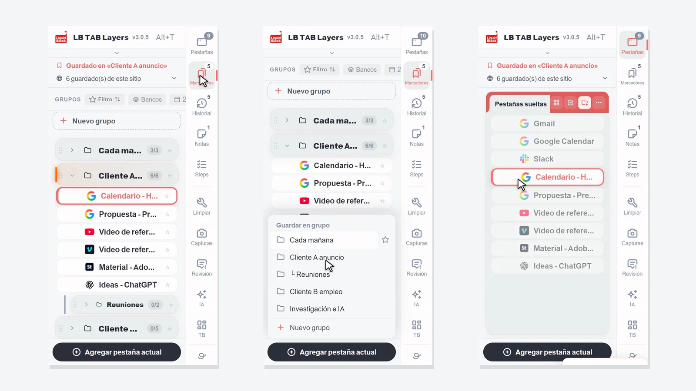
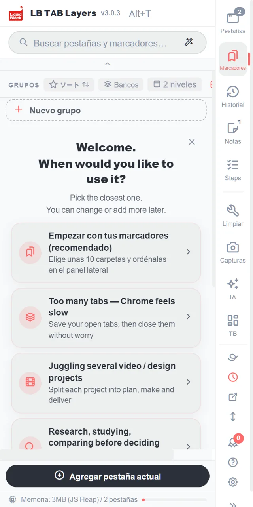
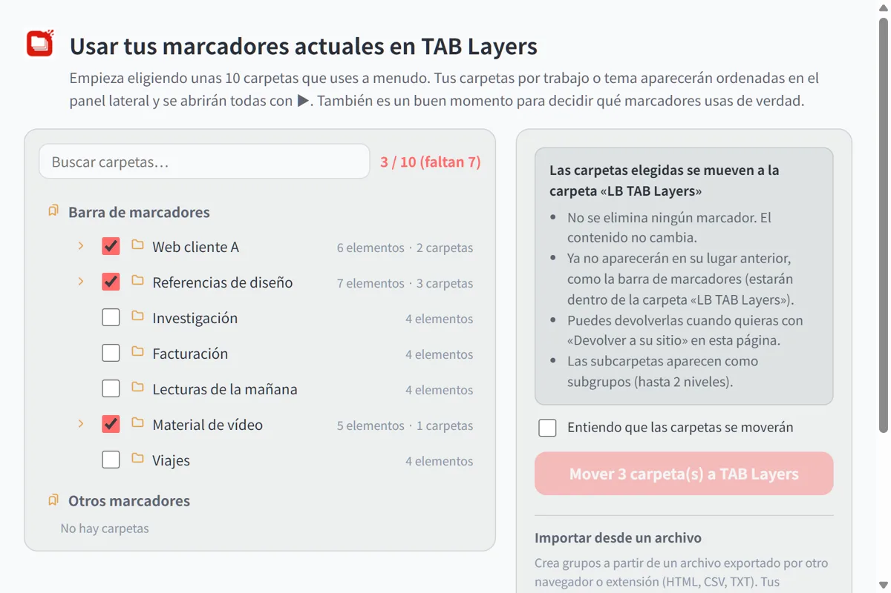
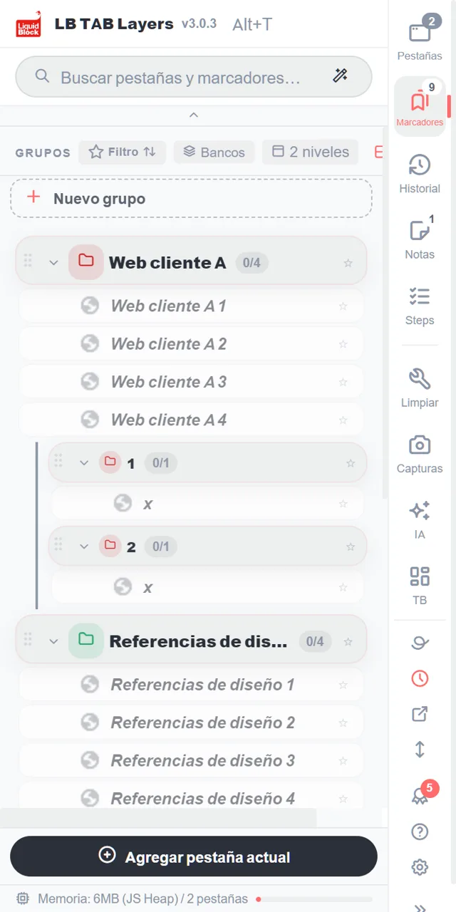
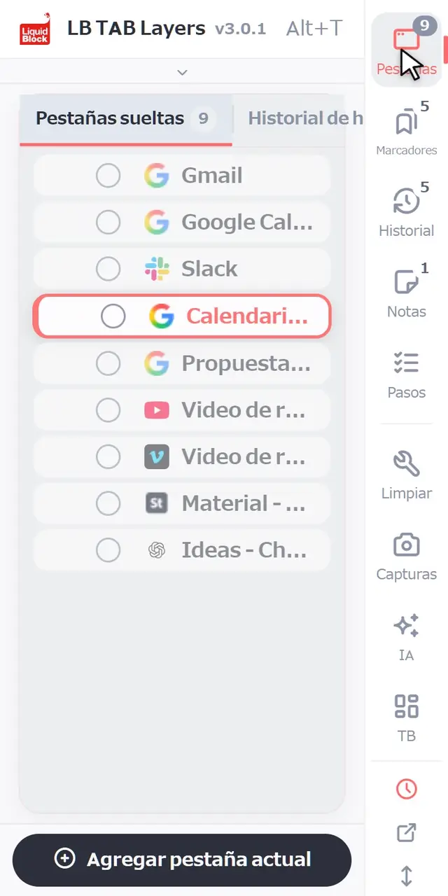
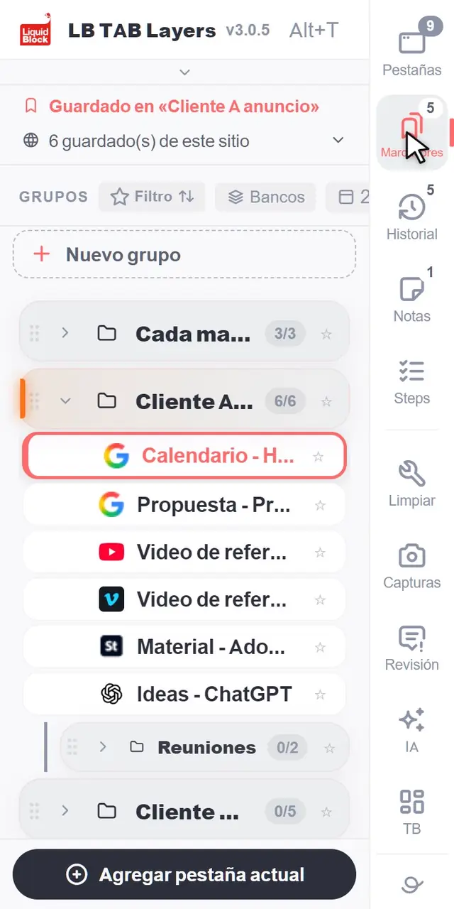
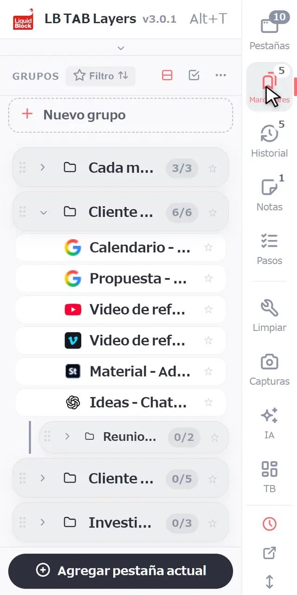
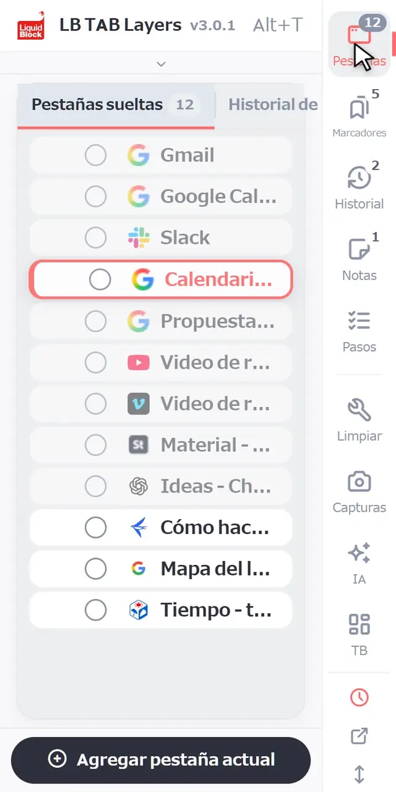
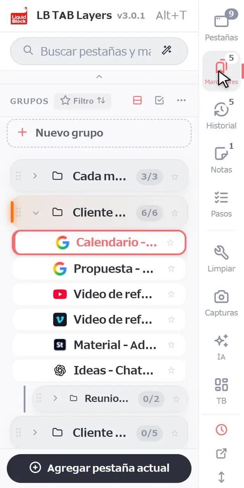
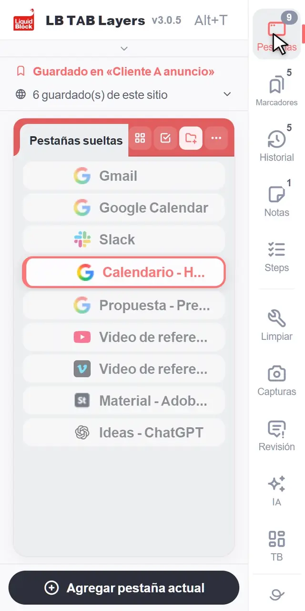

Pulsa Alt+T (Option+T en Mac) para abrir LB TAB Layers. Al principio solo necesitas tres cosas: guarda la pestaña en la que estás con Agregar pestaña actual, abre un grupo entero con ▶ y vuelve a cerrarlo con ■. Todo lo que guardas se queda como marcadores de Chrome, así que sigue ahí aunque cierres las pestañas o reinicies Chrome.
Gracias por instalar LB TAB Layers. En esta página encontrarás solo lo que necesitas en tus primeros cinco minutos.
La idea es sencilla. Las pestañas son «ahora»: aquello en lo que estás trabajando. Los marcadores son «después»: aquello a lo que volverás. El historial de hoy es el «registro» de lo que has visto. Con LB TAB Layers pasas de uno a otro en un solo panel lateral.
💡 Pulsa Alt+T (Option+T en Mac) para abrirlo cuando quieras. También puedes hacer clic en el icono de LB TAB Layers en la barra de herramientas. Si no ves el icono, haz clic en el icono de la pieza de puzle y fija LB TAB Layers.
Primero: trae tus marcadores actuales a TAB Layers (recomendado)
Si ya tienes carpetas de marcadores en Chrome, traerlas primero a TAB Layers es la forma más rápida de empezar. No hace falta crear grupos nuevos: tus carpetas se convierten en grupos por proyecto o por tema, ordenados en el panel lateral.
Pulsa «Empezar con tus marcadores (recomendado)»
Está arriba del todo en la pantalla de bienvenida que aparece justo después de instalar. También puedes abrirla luego desde Ajustes → Datos → Marcadores, o con «Importar marcadores» en la parte superior del panel grande.

Elige las carpetas que más usas (unas 10 para empezar)
Se muestran tus carpetas de marcadores de Chrome. Marca las que usas a menudo. Un contador como «3 / 10» indica cuántas llevas. No hace falta elegirlas todas: también es una buena ocasión para pensar qué marcadores usas de verdad.

Marca «Entiendo que las carpetas se moverán» y muévelas
Las carpetas pasan a la carpeta «LB TAB Layers» de tus marcadores de Chrome. No se borra nada y el contenido sigue igual. Ya no aparecerán en su sitio anterior (como la barra de marcadores), pero puedes devolverlas cuando quieras con «Devolver a su sitio» en la misma página.
Aparecen como grupos en el panel lateral
Cada carpeta se convierte en un grupo y sus subcarpetas en subgrupos. Pulsa el ▶ de un grupo para abrir todas sus páginas a la vez.

1. Cómo orientarte
En el borde del panel hay una columna de botones: Pestañas, Marcadores, Historial, Notas y Pasos. Haz clic en uno para cambiar a esa vista. Los números pequeños muestran, por ejemplo, cuántas pestañas tienes abiertas o cuántos grupos tienes.
- Pestañas — las pestañas que tienes abiertas ahora y que todavía no has guardado en ningún sitio
- Marcadores — las pestañas que has guardado, reunidas en grupos, uno por proyecto
- Historial — las páginas que has visitado hoy, también las que no guardaste
- Notas y Pasos — notas para tu trabajo y listas de comprobación paso a paso
Debajo de la línea divisoria hay herramientas. El primer día no las necesitas.

2. Lo básico
Crea un grupo
En la vista Marcadores, haz clic en + Nuevo grupo, arriba de la lista. Ponle el nombre de un trabajo, como «Cliente C web» o «Cada mañana». Lo que mejor funciona es un grupo por proyecto.

Guarda la pestaña en la que estás
Haz clic en Agregar pestaña actual, abajo del panel, y elige un grupo. Los grupos que ya tienen esa página aparecen marcados como Guardado.

Guarda varias pestañas abiertas a la vez
En la vista Pestañas, haz clic en el círculo a la izquierda de una pestaña para empezar a seleccionar. Haz clic en los círculos de las demás pestañas que quieras, luego en Al grupo, abajo, y elige un grupo. También puedes arrastrar las pestañas a un grupo de una en una.

Abre todo con ▶, cierra todo con ■
Pasa el ratón sobre un grupo y haz clic en ▶ para abrir todas sus pestañas. Se abren juntas como un grupo de pestañas de Chrome con el mismo nombre y color que tu grupo. Cuando termines, haz clic en ■ para cerrar ese grupo de pestañas de una vez. Tus pestañas siguen guardadas.
Busca
Escribe en el cuadro de búsqueda de arriba para buscar a la vez en tus pestañas abiertas, tus pestañas guardadas y el historial de hoy. No pasa nada si te equivocas en alguna letra.

3. Una forma sencilla de organizar tu trabajo
Un grupo para cada proyecto
Piensa en un grupo como un escritorio para un solo trabajo. Con esto puedes organizar todo el día:
- Por la mañana — haz clic en ▶ en el proyecto de hoy y sigue donde lo dejaste
- Cuando cambias de tarea — cierra el proyecto actual con ■ y abre el siguiente con ▶
- Al terminar el día — solo haz clic en ■. Mañana, ▶ lo trae todo de vuelta
Los sitios que usas a diario, en la barra de pines
Para los sitios que abres todos los días, como el correo o el calendario, haz clic derecho en una pestaña o un marcador y elige Añadir a la barra de pines. Quedan como iconos pequeños en la parte de arriba del panel y se abren con un clic (hasta 12). También puedes arrastrarlos ahí.

Una ventana para cada proyecto
Haz clic derecho en un grupo y elige Abrir en una ventana nueva para abrirlo como grupo de pestañas en otra ventana. Viene bien cuando trabajas en dos cosas a la vez o con un segundo monitor.
¿Se te olvidó guardar algo? Está en el historial de hoy
No hace falta guardarlo todo. Las páginas que no guardaste siguen en Historial, en el orden en que las visitaste hoy. Guarda lo importante en un grupo y cierra lo demás; casi siempre basta con eso.
🔒 Todo lo que guardas se queda como marcadores de Chrome. Tus pestañas guardadas siguen ahí aunque las cierres o reinicies Chrome, y LB TAB Layers no envía tus marcadores a ningún sitio. Los datos que están dentro de la extensión, como las notas, se pueden exportar desde Configuración.
Encontrarás diez acciones más en la guía (en inglés).
Preguntas frecuentes
Q. ¿Cómo abro LB TAB Layers?
Pulsa Alt+T en el teclado (Option+T en Mac). También puedes hacer clic en el icono de LB TAB Layers en la barra de herramientas.
Q. Si desinstalo la extensión, ¿desaparecen mis pestañas guardadas?
No. Las pestañas guardadas se quedan en tus marcadores de Chrome, en carpetas con el mismo nombre que tus grupos. Los datos que están dentro de la extensión, como las notas, se borran, así que expórtalos antes desde Configuración.
Q. ¿Dónde busca el cuadro de búsqueda?
En tus pestañas abiertas, en las pestañas guardadas en tus grupos y en el historial de hoy, todo a la vez.
Q. ¿Es gratis?
Sí. La versión gratuita te permite crear hasta 5 grupos. El historial de hoy, Pasos, el panel de control y la búsqueda con IA son funciones PRO, y todas las funciones están disponibles durante 90 días desde la instalación.
Empieza con un solo proyecto.
Ábrelo con Alt+T, guarda la pestaña en la que estás, abre con ▶ y cierra con ■. Sin cuenta · Guardado como marcadores de Chrome · Todas las funciones gratis durante 90 días
Añadir a Chrome gratis →